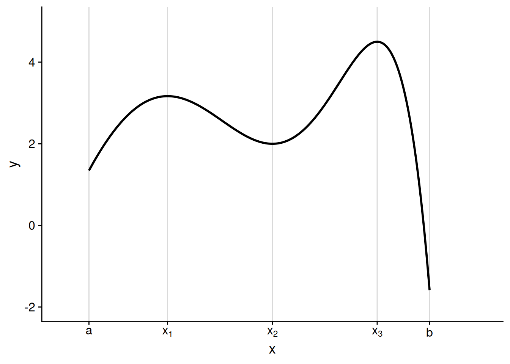
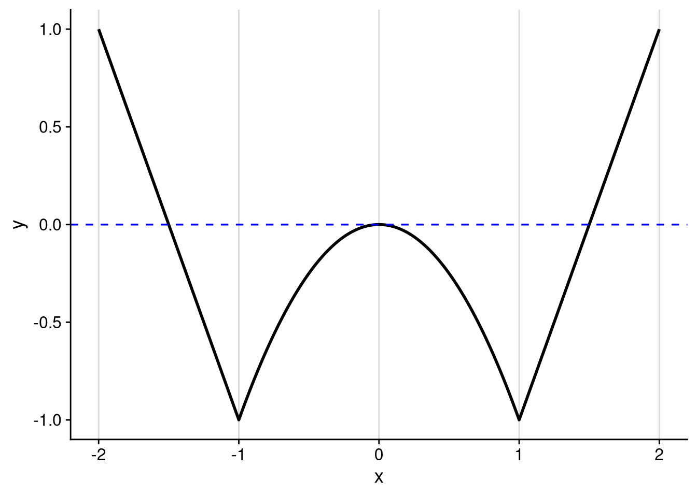
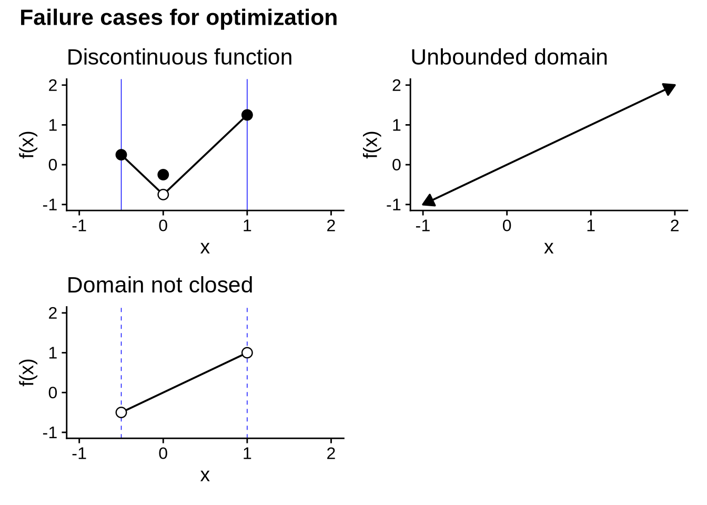
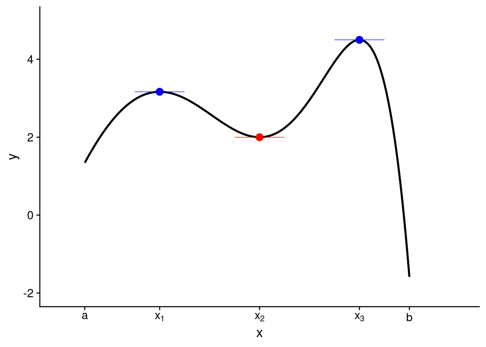
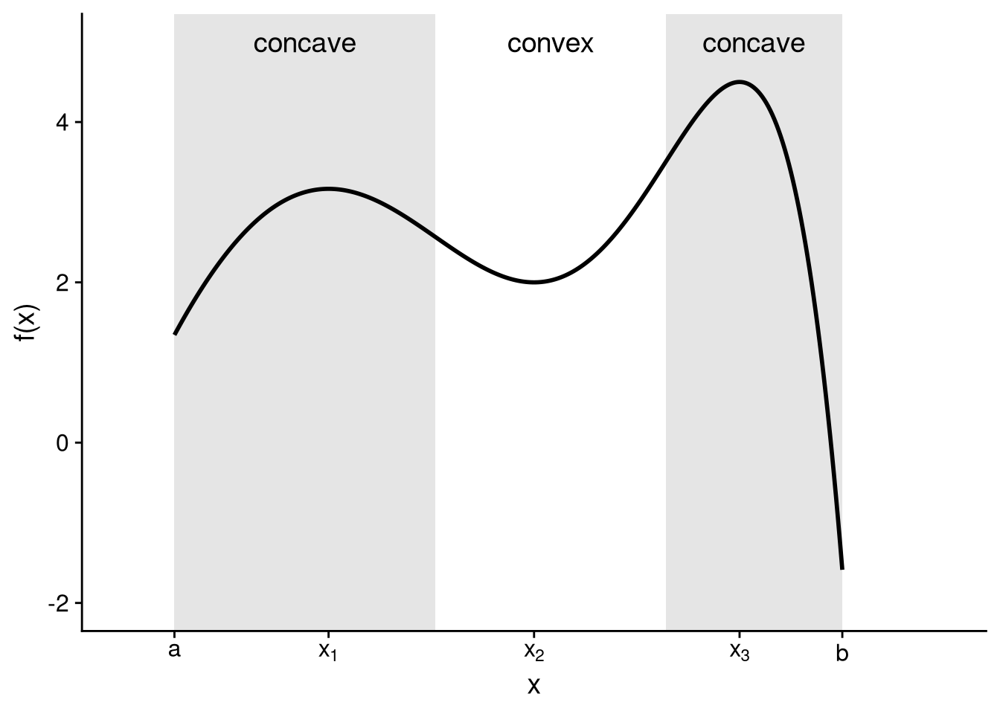

5 Optimization
5.1 The necessity of being optimal
One of the main uses for derivatives is to solve optimization problems, where we try to find the inputs that lead to the lowest (minimal) or highest (maximal) values of a function. In our motivating example of the statistical lottery in Section 4.1, for example, we were trying to find the guess that would lead to the highest expected winnings.
For functions with a finite domain, it is conceptually simple (though perhaps tedious in practice) to find the maximum and minimum values. Plug in every x \in X, find the associated function values f(x), and track which inputs lead to the highest and lowest values. It is not so simple when the domain is infinite, such as in our guessing game example where the domain was any real number between 0 and 100. We cannot enumerate every possible value of f(x), so we must be more clever to make firm statements about maximal and minimal values.
Using derivatives, we can sharply narrow down the set of inputs x \in X that might lead to a maximal or minimal value of the function f(x). For example, look again at Figure 4.5, which plots expected winnings in the statistical lottery as a function of the guess. The graph of the function is basically flat at its peak, near a guess of 67.4. In calculus terms, the derivative of the function is 0 at the peak — as we also saw at the end of Section 4.3.2. This is not an accident or a quirk of this particular example. When we search for maximal or minimal values of a function, we will be focusing on those points where its derivative equals 0.
5.2 Definitions
Like a mountain range or a long-running TV series, a function can have many peaks and valleys, as in Figure 5.1 below.
Only after writing these notes did I realize I mentioned TV right before an illustration of a graph with Twin Peaks.
Here are the points of interest in this graph:
At a, the lower endpoint, the function is increasing. When x is just above a, the function value is greater than f(a).
The first peak occurs at x_1. The function value here, f(x_1), is greater than the values when x is just above or just below x_1. Consequently, we call x_1 a local maximizer. However, as we’ll see, it’s not the highest peak of the function.
There’s a valley at x_2. The function value here, f(x_2), is lower than the values when x is just above or just below x_2, making x_2 a local minimizer. However, this is not the overall low point of the function.
There’s a second peak at x_3, and this is where the function reaches its highest value overall. As such, we call x_3 a global maximizer of the function.
At b, the upper endpoint, the function reaches its lowest value overall. This makes b the global minimizer of the function.
The formal definition of a global maximizer is reasonably straightforward: it is the point along the domain where the function reaches its highest value.
Definition 5.1 (Global maximizers and minimizers) Consider a function f : X \to \mathbb{R}, where X \subseteq \mathbb{R}.
We call x^* \in X a global maximizerA domain point x^* is a global maximizer (minimizer) of the function f if f(x^*) \geq (\leq) f(x) for all x in the domain. of f when f(x^*) \geq f(x) for all x \in X. If x^* is a global maximizer of f, then we call f(x^*) the maximumIf x^* is a global maximizer (minimizer) of f, then f(x^*) is the maximum (minimum) of f. of f.
Similarly, we call x^* \in X a global minimizer of f when f(x^*) \leq f(x) for all x \in X. If x^* is a global minimizer of f, then we call f(x^*) the minimum of f.
A function may have multiple global maximizers or minimizers. As a trivial example, consider the constant function f : \mathbb{R} \to \mathbb{R} defined by f(x) = 0 for all x \in \mathbb{R}. Every real number is both a global maximizer and a global minimizer of this function.
It is a bit trickier to define a “local” maximizer. Intuitively, we want to say that the value of the function at the local maximizer is at least as high as at any other nearby point. But what qualifies as “nearby”? To define this, we will use the same kind of logic as in our definition of a function limit (Definition 4.1). Specifically, we will call x^* a local maximizer if there is an interval of any positive width around it where the function value doesn’t go higher.
Definition 5.2 (Local maximizers and minimizers) Consider a function f : X \to \mathbb{R}, where X \subseteq \mathbb{R}.
We call x^* \in X a local maximizerA domain point x^* is a local maximizer (minimizer) of the function f if there is a value \delta > 0 for which f(x^*) \geq (\leq) f(x) for all domain points x that satisfy x^* - \delta < x < x^* + \delta. of f when there is some \delta > 0 such that f(x^*) \geq f(x) for all x \in X \cap (x^* - \delta, x^* + \delta).
Similarly, we call x^* \in X a local minimizer of f when there is some \delta > 0 such that f(x^*) \leq f(x) for all x \in X \cap (x^* - \delta, x^* + \delta).
To try and unpack this definition, let’s work through an example of proving — without yet using derivatives — that a particular point is a local maximizer. Consider the function f : [-2, 2] \to \mathbb{R} defined as follows, which has a sort of W-shaped graph (see Figure 5.2): \begin{aligned} f(x) &= \begin{cases} -2x - 3 & \text{if $x \leq -1$,} \\ -x^2 & \text{if $-1 < x < 1$,} \\ 2x - 3 & \text{if $x \geq 1$.} \end{cases} \end{aligned}

We can see from the graph that there is a local maximum at x = 0. We have f(0) = 0, yet f(x) < 0 for any other x in the vicinity of 0, making x = 0 a local maximizer. How do we make this argument using the formal definition? Well, we need to find a small enough interval around x = 0 for which all f(x) \leq 0. From looking at the definition of the function, it seems that an interval of any length less than 1 will suffice.
To formally prove that x = 0 is a local maximizer as defined by Definition 5.2, take any \delta that satisfies 0 < \delta < 1. For all x \in (0 - \delta, 0 + \delta), we have f(x) = -x^2 \leq 0 = f(0). Therefore, x = 0 is a local maximizer of f.
5.3 Existence and non-existence of solutions
A maximization or minimization problem may not have a solution. For example, consider the identity function on the entire real line: f : \mathbb{R} \to \mathbb{R} defined by f(x) = x. No point x \in \mathbb{R} can be a maximizer of this function, as any x' > x would result in f(x') > f(x). For similar reasons, no point x \in \mathbb{R} can be a minimizer either.
It is certainly frustrating to work on a problem only to find that it has no solution. One way to avoid this frustration is to work on problems that we know must have a solution, even if perhaps we don’t know what that solution is. The following theorem, which is an application of the Weierstrass extreme value theorem, gives us sufficient conditions for the existence of a global maximizer and minimizer.
Theorem 5.1 (Extreme value theorem) If f : [a, b] \to \mathbb{R} is continuous, then it has a global minimizer and maximizer; i.e., there exist x^* \in [a, b] and x^{**} \in [a, b] such that f(x^*) \leq f(x) \leq f(x^{**}) for all x \in [a, b].
TipMore general statement
The statement here is actually true for any continuous function f : X \to \mathbb{R} whose domain X \subseteq \mathbb{R} is closed and bounded.
X is closed if it meets the following condition: for any real number y, if y \notin X, then there is a real number \delta > 0 such that (y - \delta, y + \delta) \cap X = \emptyset. An interval that contains its endpoints, [a, b], is perhaps the simplest example of a closed set. But there are many other closed sets. For example, any finite set is closed, and so is a finite union of closed sets like [a, b] \cup [b + 1, c]. Finally, it is vacuously true that the set of all real numbers, \mathbb{R}, is closed.
The boundedness condition is perhaps easier to wrap your head around. X is bounded if there exist numbers A and B such that A \leq x \leq B for all x \in X.
This result is giving us three conditions which, together, guarantee the existence of solutions to the global optimization problem.
Continuity of f. This condition ensures that the function can’t get closer and closer to a maximum or minimum, but then suddenly jump away.
See the top-left panel of Figure 5.3 for an example of how a discontinuous function may lack a global maximum or minimum. From the graph, it looks like the global minimizer “should” be 0, as the function approaches a low point as we get closer and closer to x = 0. But then the value of the function suddenly jumps up once we actually reach x = 0. Consequently, there is no global minimizer. You can get close to the low point by picking some value of x that’s really close to 0 — but there will always be some x that is even closer to the low point.
Bounded domain. This ensures that the function cannot go off to infinity in either direction.
The top-right panel of Figure 5.3 shows why a function with an unbounded domain might not have a global maximizer or minimizer. It plots the identity function, f(x) = x, which as discussed at the start of this section, does not have any global optima — no matter where you are on the x-axis, you can always find a value of the function that’s higher (by moving to the right) or lower (by moving to the left).
Closed domain. This one is actually similar to the continuity condition. It ensures that the function can’t get closer and closer to a maximum or minimum at a boundary point, only to be undefined at the boundary point itself.
The bottom-left panel of Figure 5.3 illustrates this condition. It plots the identity function, f(x) = x, on a domain that does not include its endpoints. So the function approaches what “should” be its global minimizer as we approach the lower endpoint on the x-axis, but it never quite gets there. Same for the global maximizer as we approach the upper endpoint.

Continuity and a closed domain are sufficient for the existence of global optima, but not necessary. Discontinuous functions, functions with unbounded domains, and functions with domains that are not closed may have global maximizers and minimizers. So when you have such a function, you don’t have to give up on trying to optimize it — you just can’t go in assuming there’s a solution, as you could with a continuous function on a closed and bounded domain.
Exercise 5.1 (Optimization when the necessary conditions fail) Come up with an example of a function f : X \to \mathbb{R} that is not continuous, whose domain is unbounded, and whose domain is not closed, but which has a global minimizer and maximizer.
Answer
There are infinitely many examples I could give, but here is a relatively simple one. Consider the function f : (0, \infty) \to \mathbb{R} defined by \begin{aligned} f(x) = \begin{cases} 0 & \text{if $x \neq 7$,} \\ 1 & \text{if $x = 7$.} \end{cases} \end{aligned} f is discontinuous, as \lim_{x \to 7} f(x) = 0 \neq f(7). Its domain is unbounded, and it is not closed as it does not contain the lower endpoint at 0. However, we have f(1) = 0 \leq f(x) \leq 1 = f(7) for all x \in (0, \infty), so 1 is a global minimizer and 7 is a global maximizer.
5.4 Derivative conditions for local optima
5.4.1 First-order conditions
You might have noticed that a function tends to be nearly flat in the vicinity of a local maximum or minimum, with the possible exception of one that occurs at the endpoint of its domain. To illustrate, let’s look at the “interior” (i.e., not at the endpoints) local maximizers and minimizers of the function from Figure 5.1.

In fact, for a function that is differentiable on its entire domain, we can rule out a local maximizer or minimizer at any interior point where f'(x) \neq 0. For example, imagine that f'(x) > 0, meaning that the function is increasing at x. Then at any value y just above x, it must be the case that f(y) > f(x). Therefore, x is not a local maximizer. But it is also not a local minimizer, as at any value w just below x, we must have f(w) < f(x). You can use a mirror image of this argument to rule out a local maximizer or minimizer at a point where f'(x) < 0.
Now we’ve seen why f'(x) \neq 0 implies that x is not a local maximizer or minimizer (unless perhaps x is one of the endpoints of the domain). Using our friend the contrapositive (see Exercise 2.5), we conclude that if x is a local maximizer or minimizer, it must be the case that f'(x) = 0. We call this requirement the first-order conditionThe requirement that f'(x) = 0 at any local maximizer or minimizer that is not at an endpoint of the domain. for a local optimum.
Theorem 5.2 (First-order necessary condition) Let f : [a, b] \to \mathbb{R} be differentiable. If x^* \in (a, b) is a local maximizer or minimizer of f, then x^* is a critical pointA point x in the domain of a differentiable function is a critical point if f'(x) = 0., meaning f'(x^*) = 0.
Proof. I will prove the contrapositive. Let d = f'(x^*), and suppose d > 0. (The proof for the opposite case is so similar that it would be a waste of my time to type it out and a waste of your time to read it. Or, in math-speak, “The proof for the opposite case is analogous.”) By definition of the derivative, we have \begin{aligned} \lim_{x \to x^*} \frac{f(x) - f(x^*)}{x^* - x} = d. \end{aligned} Using the definition of the limit (Definition 4.1) and letting \epsilon = d/2 > 0, we know there exists a \delta > 0 such that \begin{aligned} \frac{d}{2} < \frac{f(x) - f(x^*)}{x - x^*} < \frac{3d}{2} \end{aligned} for all x \in (x^* - \delta, x^*) \cap (x^*, x^* + \delta). Consequently, for all x \in (x^*, x^* + \delta), we have \begin{aligned} f(x) - f(x^*) > \frac{d}{2} \cdot (x - x^*) > 0, \end{aligned} which implies that x^* is not a local maximizer. Similarly, for all x \in (x^* - \delta, x^*), we have \begin{aligned} f(x) - f(x^*) < \frac{d}{2} \cdot (x - x^*) < 0, \end{aligned} which implies that x^* is not a local minimizer.
We have shown that if f'(x^*) \neq 0, then x^* is not a local maximizer or minimizer. It is logically equivalent that if x^* is a local maximizer or minimizer, then f'(x^*) \neq 0.
Theorem 5.2 drastically reduces the amount of guess-and-check we have to do to find the maximizers and minimizers of a differentiable function. It tells us that any local (and thus any global) optimum must occur at a critical point or an endpoint. Therefore, to find the global optimizers of a differentiable function on a domain [a, b], we can follow an algorithm:
Find all critical points by solving for x in the equation f'(x) = 0.
Letting x_1, \ldots, x_M denote the critical points of the function, plug these and the endpoints into the function to calculate the values f(a), f(x_1), \ldots, f(x_M), f(b).
The global minimizer(s) are whichever input(s) gave the lowest value in the last step. The global maximizer(s) are the one(s) that gave the highest value.
Exercise 5.2 Find the global minimizers and maximizers of f : [-3, 3] \to \mathbb{R} defined by f(x) = 2 x^3 - 3 x^2 - 12 x + 4.
Answer
First let’s find the critical points. Using the sum rule, the constant multiple rule, and the power rule, we have \begin{aligned} f'(x) &= 6 x^2 - 6 x - 12 \\ &= 6 (x^2 - x - 2) \\ &= 6 (x - 2) (x + 1). \end{aligned} Therefore, the critical points of the function are x = -1 and x = 2. This gives us four points to evaluate to find the global optima, namely the two endpoints and the two critical points.
f(-3) = 2 \cdot (-27) - 3 \cdot 9 - 12 \cdot (-3) + 4 = -41.
f(-1) = 2 \cdot (-1) - 3 \cdot 1 - 12 \cdot (-1) + 4 = 11.
f(2) = 2 \cdot 8 - 3 \cdot 4 - 12 \cdot 2 + 4 = -16.
f(3) = 2 \cdot 27 - 3 \cdot 9 - 12 \cdot 3 + 4 = -5.
Therefore, the global maximizer is x = -1 and the global minimizer is x = -3.
5.4.2 Second-order conditions
You might have noticed that a function tends to look concave near a local maximum, and it tends to look convex at a local minimum. For example, let me take the function from Figure 5.1 above and label the regions where it is concave versus where it is convex.

This pattern — concave near a maximum, convex near a minimum — is not a fluke of this particular graph. It’s a general property of functions that are twice differentiable. To see why, let’s think about what must be true about a domain point x^* if x^* is a local maximizer. (The same logic, in reverse, will apply in the case of a local minimizer.)
At values of x just below x^*, the function must be increasing as it comes up to the local maximum. Therefore, we will have f'(x) > 0 for a range of x values just below x^*.
At the local maximizer itself, x^*, we must have f'(x^*) = 0, per Theorem 5.2.
At values of x just above x^*, the function must be decreasing as it comes down from the local maximum. Therefore, we will have f'(x) < 0 for a range of x values just above x^*.
Putting these together, we see that the first derivative itself is decreasing in a range around the local maximizer, as it starts off positive, hits zero at the maximizer itself, and then becomes negative. If the first derivative is decreasing, that means the derivative of the first derivative — our friend, the second derivative — is negative. Thus, the function is concave near a local maximizer.
In fact, in many cases, the value of the second derivative at a critical point can tell us whether that point is a local maximizer or minimizer. Because we are evaluating the second derivative to determine the type of local optimum, we call this a second-order conditionAny critical point at which the second derivative is negative (positive) is a local maximizer (minimizer)..
Theorem 5.3 (Second-order sufficient condition) Let f : X \to \mathbb{R}, where X \subseteq \mathbb{R}, be twice differentiable. For any value x^* that is a critical point of f:
If f''(x^*) < 0, then x^* is a local maximizer of f.
If f''(x^*) > 0, then x^* is a local minimizer of f.
Exercise 5.3 Consider the function from Exercise 5.2, f(x) = 2 x^3 - 3 x^2 - 12 x + 4. Use the second-order sufficient conditions to show that x = -1 is a local maximizer and that x = 2 is a local minimizer.
Answer
We have the first and second derivatives \begin{aligned} f'(x) &= 6 x^2 - 6 x - 12, \\ f''(x) &= 12 x - 6. \end{aligned} We already saw in the answer to Exercise 5.2 that x = -1 and x = 2 are critical points. Then, we have f''(-1) = -12 - 6 = -18 < 0, so x = -1 is a local maximizer, and we have f''(2) = 24 - 6 = 18 > 0, so x = 2 is a local minimizer.
The second-order conditions say nothing about the status of a critical point at which the second derivative equals zero. It could be a local maximizer, a local minimizer, or neither — you can’t tell from the second derivative alone.
Exercise 5.4 Consider the function f : \mathbb{R} \to \mathbb{R} defined by f(x) = x^4. Show that f''(0) = 0 and that x = 0 is a local (and indeed global) minimizer of f.
Answer
By the power rule, we have f'(x) = 4 x^3 and f''(x) = 12 x^2, the latter of which shows that f''(0) = 0. But we know that x = 0 is a local and global minimizer because f(0) = 0, while for all x \neq 0 we have f(x) = x^4 > 0.
5.5 Global optimization
In both statistics and formal theory, we are typically interested in the global optimum more so than a local optimum. In statistics, we want to find the parameter estimates that best fit the data, not just the ones where no other “nearby” estimate would fit the data better. In game theory, we want to find the optimal strategy out of all of the options available to a player. These are both global optimization problems.
For functions with bounded, closed domains, we have seen that we can brute force our way to the global maximizers and minimizers by evaluating the function at the critical points and the endpoints. But sometimes we run into problems where we can’t sensibly place bounds on the domain. For example, think about finding the regression slope that best fits a particular dataset — you want to find the best of all possible slopes, not to place some kind of arbitrary a priori constraint on the set of coefficients under consideration.
With some optimization problems, we are lucky enough to be able to make statements about a global maximizer or minimizer on the basis of calculus criteria alone. In particular, in the special case where the second derivative of a function has the same sign throughout the entire domain, the first-order condition is not only necessary for a local optimum, but sufficient for a global optimum.
Theorem 5.4 Let f : X \to \mathbb{R}, where X \subseteq \mathbb{R} is an interval, be twice differentiable. (The restriction to an interval is not limited to bounded intervals; intervals like (0, \infty) or even the entire real line also count.)
If f''(x) < 0 for all x \in X, then there is at most one critical point x^* \in X. If such a critical point exists, it is the unique global maximizer (i.e., no other point in the domain is a global maximizer).
If f''(x) > 0 for all x \in X, then there is at most one critical point x^* \in X. If such a critical point exists, it is the unique global minimizer.
Exercise 5.5 Consider the expected winnings function from the lottery game in the previous chapter, as described in Section 4.1: W(g) = \frac{1}{N} \sum_{i=1}^N \left[10000 - (x_i - g)^2\right]. Show that W''(g) > 0 for all g \in \mathbb{R}. Use that fact to argue that g = \bar{x} = \frac{1}{N} \sum_{i=1}^N x_i is the unique global maximizer.
Answer
As shown at the end of Section 4.3.2, we have W'(g) = 2 (\bar{x} - g). Consequently, we have W''(g) = -2 < 0 for all g \in \mathbb{R}. Because g = \bar{x} is a critical point of W, Theorem 5.4 implies that this is the unique global maximizer of W.
5.6 Concept review
- Global maximizers and minimizers
- A domain point x^* is a global maximizer (minimizer) of the function f if f(x^*) \geq (\leq) f(x) for all x in the domain.
- Maximum and minimum
- If x^* is a global maximizer (minimizer) of f, then f(x^*) is the maximum (minimum) of f.
- Local maximizers and minimizers
- A domain point x^* is a local maximizer (minimizer) of the function f if there is a value \delta > 0 for which f(x^*) \geq (\leq) f(x) for all domain points x that satisfy x^* - \delta < x < x^* + \delta.
- First-order condition
- The requirement that f'(x) = 0 at any local maximizer or minimizer that is not at an endpoint of the domain.
- Critical point
- A point x in the domain of a differentiable function is a critical point if f'(x) = 0.
- Second-order condition
- Any critical point at which the second derivative is negative (positive) is a local maximizer (minimizer).
- Critical point
- A point x in the domain of a differentiable function is a critical point if f'(x) = 0.
- First-order condition
- The requirement that f'(x) = 0 at any local maximizer or minimizer that is not at an endpoint of the domain.
- Global maximizers and minimizers
- A domain point x^* is a global maximizer (minimizer) of the function f if f(x^*) \geq (\leq) f(x) for all x in the domain.
- Local maximizers and minimizers
- A domain point x^* is a local maximizer (minimizer) of the function f if there is a value \delta > 0 for which f(x^*) \geq (\leq) f(x) for all domain points x that satisfy x^* - \delta < x < x^* + \delta.
- Maximum and minimum
- If x^* is a global maximizer (minimizer) of f, then f(x^*) is the maximum (minimum) of f.
- Second-order condition
- Any critical point at which the second derivative is negative (positive) is a local maximizer (minimizer).